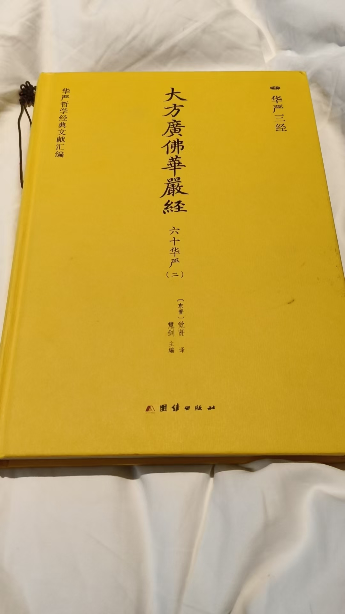
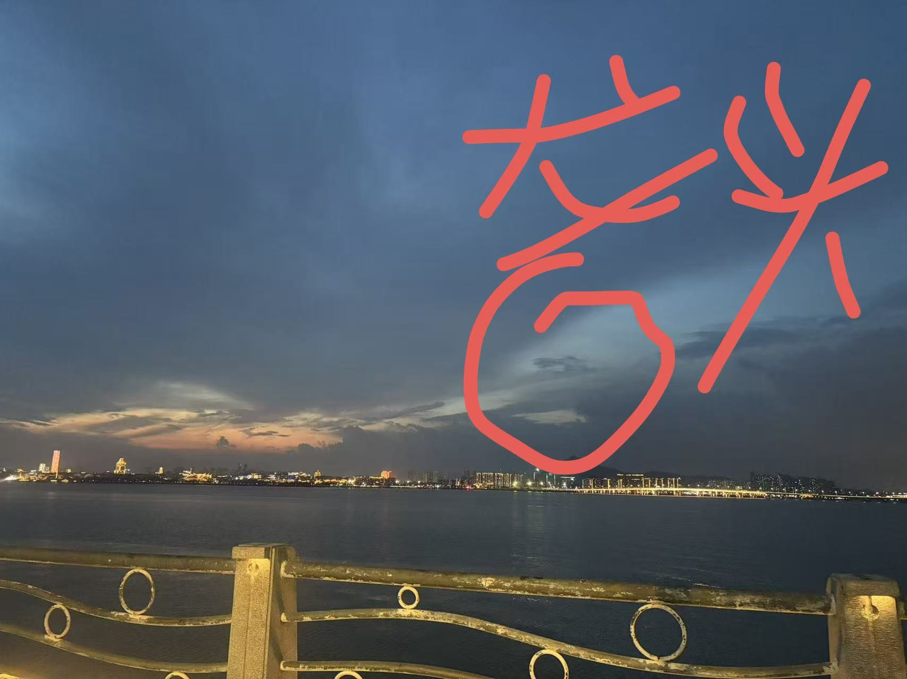

20260920龙宫
修炼修行民间文化符咒术法
六十华严读完了
回家后再读八十华严
八十华严就不急着读了
很多重复的
慢慢啃慢慢消化
六十华严，最后讲了，去龙宫修炼，一天能抵万年
这是泄天机之秘
[鼓掌][鼓掌][爱心]开眼界
龙宫好玩吗
非常好玩
昨天一男孩问自己来处
画面同框，左边一角，出现龙头，黄角，右边画面中间，是铜铠甲神将
就是龙修成的神将
问怎么下来的
看到阴云密布，这龙将在司雨
地下一小片区域，发了洪水，人在水里翻滚
犯律条了
这次龙族下来很多元神
这些元神会不会带更多的人去龙宫
看他原神，能量
龙族才能去龙宫
咱们只能去玩
进入龙宫要龙牌
这样，在哪里获得龙牌。
要龙族的

龙宫这捷径没了[吐][撇嘴]，期待下一个秘境
释迦牟尼世界一劫，是阿弥陀佛的一日一夜
一劫是13亿年
同学们，认真修炼啊
这虽然是闲聊群，
学过的不要懈怠
上海老学生，是最懒的一个，
不过十二年了
再不练也十二年了
这次一见，能力非常高，令我刮目相看
那时候在市政工作，去年刚退休
老严师兄吗？[呲牙]
我以为他还是很懒
没想到退休以后，大门不出，潜心修炼
他的境界挺高的
是啊
这没想到
亲眼见证，相当厉害[强][强]
福缘到了
刚见面，让我验证修为，
我看到，一个庙门里，一个金铠甲神将，身上分着天人，慧人，法身，像千手观音一样
还好，我提前说了，这境界很高
没想到，显示出来，确实很高
上次好像说是已经超过天仙的修为了
有庙，就是正果成就之像
不过，是道果
他自己都问我，按照修行来说，没有这么快
我看了一下，跟他说，引人入道，自造七级浮屠
也就是说，
介绍别人修炼，积累的功德是非常大的
是的，这个确实
咱们是证道，得到福报
唉，抽时间多修炼吧
不过，介绍人学偏门邪道，那可是遭劫难的
[呲牙][呲牙][呲牙]
这也说明，工作忙 每天练的时间短，但总的时间，也能补足
我读完三本华严经
还有三本
我的预见就是，读完华严经，神通具足
功德圆满
我也在勤奋修炼
回头学习下
先看楞严经开悟的方法
不要太执着于求神通啊。
咱们是开眼开悟
菩萨的开悟方法不一定适合每一个人，所以，举例了好多菩萨的开悟方法
@Augustus-吉华 时代不一样
平时修炼，不能追求神通
不追求，但要有
现在我是以术证道
近五十年的修炼，能量足够了
可以发挥转化了
真人，您有点沉迷神通了，要小心啊。
后期，修术为主
[憨笑][憨笑][憨笑][憨笑]
就可以
而不是真的学法术
不一种情况
五十个分身 逐个分解
是必须神足通
是有要求的
不是啥也不会就成就
文殊菩萨伸展右手，过一百一十由旬，摩善财童子顶
一由旬大约12公里
也就是说，千里之外
这一招，倒也简单，我就能做到